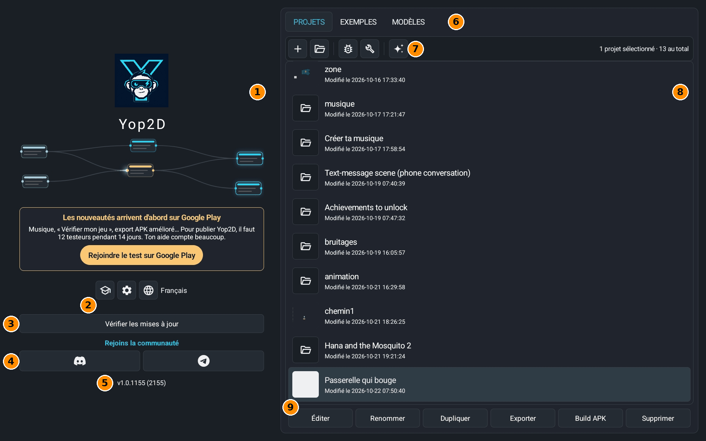
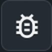
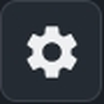

È la prima schermata che vedi quando apri Yop2D: da qui crei, apri, esporti o elimini i tuoi progetti.
La schermata a colpo d'occhio

- 1Il logo e i nodi che si muovono: solo decorazione. Tocca un nodo e invia una piccola raffica di luce.
- 2Tre pulsanti: Modalità scuola, Impostazioni di Yop2D e Lingua (spiegati più sotto).
- 3Cerca aggiornamenti: cerca una nuova versione di Yop2D; il pulsante diventa arancione se c'è. Se hai installato Yop2D da Google Play, non c'è: ci pensa Google Play agli aggiornamenti.
- 4Discord e Telegram: per unirti alla community, fare domande e mostrare i tuoi giochi.
- 5La versione di Yop2D. È il numero da dare quando segnali un problema.
- 6Le tre schede: PROGETTI (i tuoi giochi), ESEMPI (giochi completi da aprire per vedere come sono fatti; si scaricano al primo tocco) e MODELLI (piccoli progetti che mostrano una cosa sola, con guide passo passo). Esempi e Modelli si aprono a schermo intero.
- 7La barra degli strumenti dei progetti (spiegata più sotto). A destra, il numero di progetti.
- 8L'elenco dei progetti: tocca un progetto per sceglierlo (viene evidenziato). Vedi il nome e la data dell'ultima modifica.
- 9I pulsanti in basso agiscono sul progetto scelto. Modifica lo apre nell'editor. Rinomina cambia il nome. Duplica ne fa una copia, per provare senza rischi. Esporta lo salva in un file .zip (un backup, o da inviare a qualcuno). Crea APK crea l'app Android del gioco (un file .apk). Elimina lo cancella, dopo una richiesta di conferma.
I piccoli pulsanti
- Crea un progetto
Crea un nuovo progetto vuoto. Scegli il nome e il formato (orizzontale o verticale). - Apri un progetto scaricato
Aggiunge alla tua lista un progetto ricevuto o scaricato (un file .zip). 
Registro del progetto
Mostra il registro del progetto scelto: i messaggi del gioco, utili per capire un problema. Puoi copiarlo e inviarlo a chi ti aiuta.- Test della cartella dei progetti
Controlla che Yop2D possa salvare i suoi progetti. Ti serve solo se te lo chiedono in caso di problemi. - Per iniziare bene
Riapre il pannello delle guide passo passo (il tuo primo gioco, il tuo eroe animato, l'editor…). - Modalità scuola
Un'interfaccia semplificata e contenuti più morbidi, per bambini e classi. 
Impostazioni di Yop2D
Le statistiche anonime (che puoi disattivare), la lingua, il salvataggio automatico e la modalità scuola.- Lingua
Cambia la lingua di Yop2D.